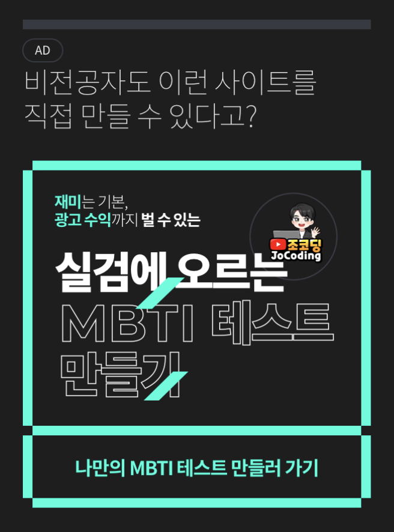
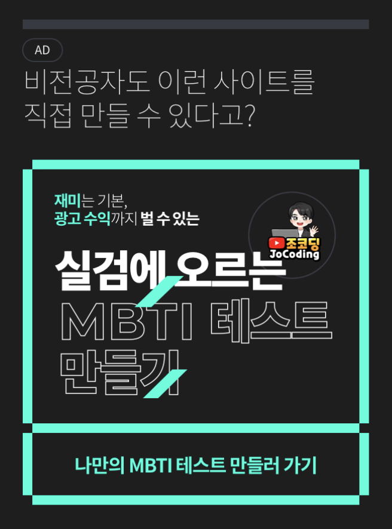
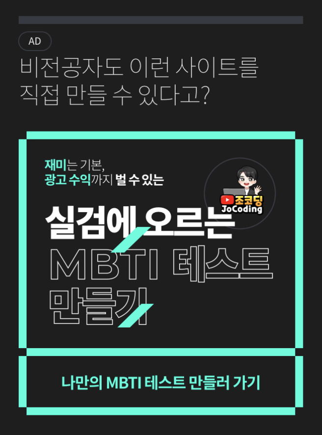

セレンゲティ動物テスト
22年は切り替わる人生を！ 私はどんな風に計画を立てる人かな？
セレンゲティ動物テストを受ける
問題
答えA
答えB
わたしとそっくりな動物は？
動物の名前
説明
私のセレンゲティ動物
シェア
Copyright 2021 LIKE LION all rights reserved



 わたしとそっくりな動物は？
わたしとそっくりな動物は？

 Copyright 2021 LIKE LION all rights reserved

Copyright 2021 LIKE LION all rights reserved
